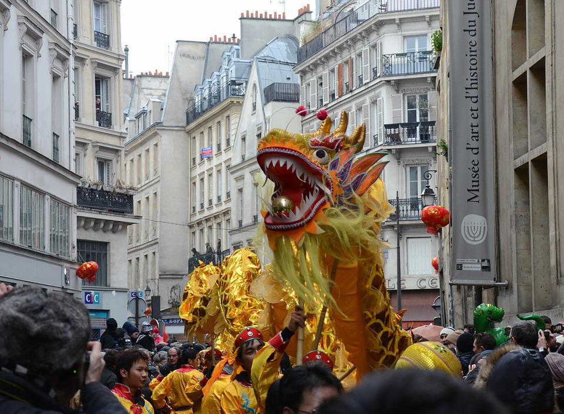

Reseña Historica
Llevamos desde 2012 haciendo disfraces para todo publico, empezando todo con una idea sencilla, no obstante después la idea se volvió realidad al pensar en "No dejar de soñar", somos fieles creyentes que más allá de un disfraz contamos con un sueño o niño interior que busca estar más cerca de su sueño.
